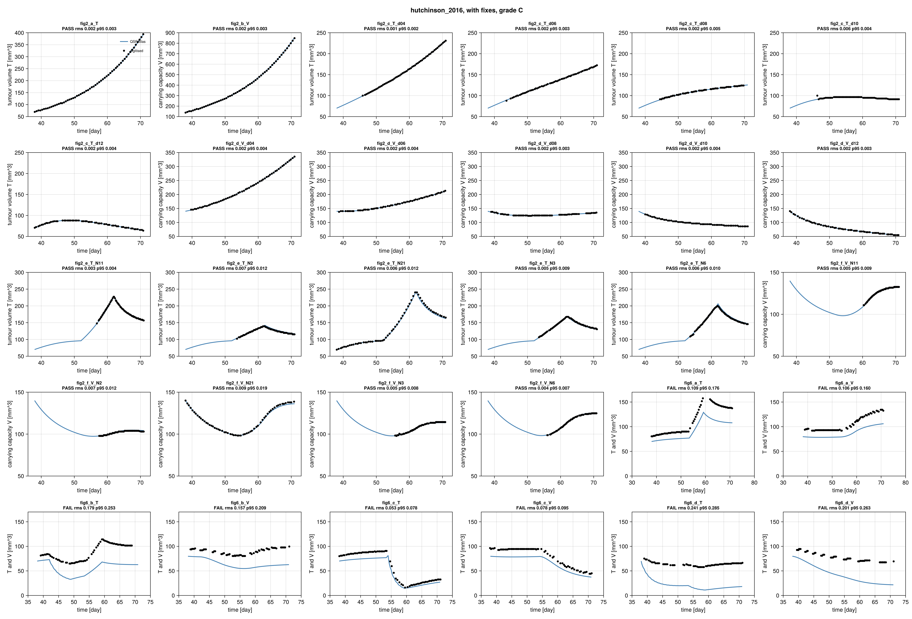
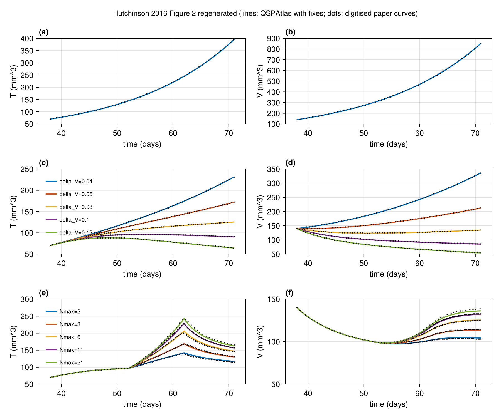
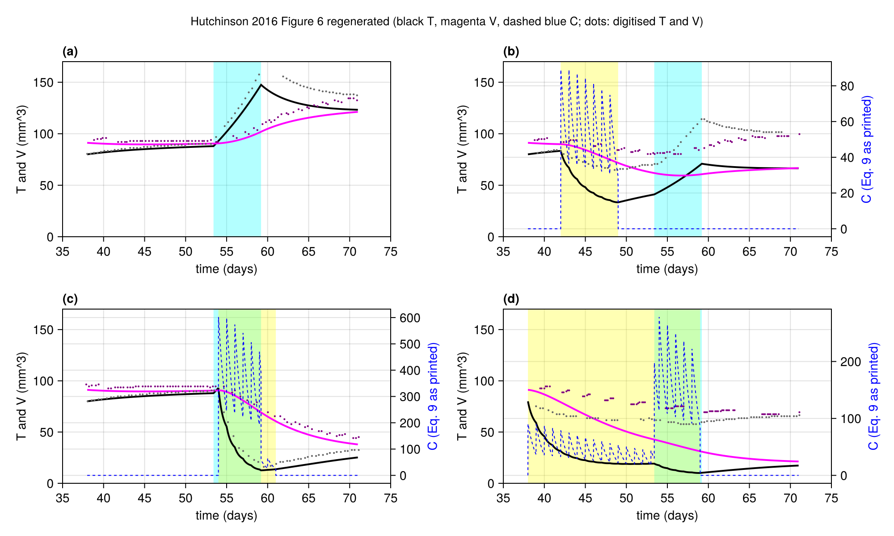

hutchinson_2016: grade C (Figure 2: B, Figure 6: C)
Hutchinson LG, Mueller HJ, Gaffney EA, Maini PK, Wagg J, Phipps A, Boetsch C, Byrne HM, Ribba B. Modeling longitudinal preclinical tumor size data to identify transient dynamics in tumor response to antiangiogenic drugs. CPT Pharmacometrics Syst Pharmacol 2016;5:636-645. DOI 10.1002/psp4.12142, PMC5192995.
Grade C overall. Figure 2 (22 curves) reproduces after one documented typo fix (Figure 2 alone would be B, with no input read from a figure). Figure 6 (8 curves) does not reproduce even with T0 read from the figure: the printed alpha~C = 1 wipes out the tumour in panels b and d, and panel a (no drug) misses its peak. A value of alpha~C = 0.01 together with a resistance clock started at the beginning of chemotherapy brings panels b to d close, but both were adopted only after a comparison with Figure 6 and have no independent source, so they are sensitivity runs, not fixes (see Provenance, Issues 3-6, notes.md). Both figures were frozen as targets together before any comparison, so both are graded; the per-figure split is in score.toml (figure_grades). Strict grade (article and supplement only): D, because Figure 6 uses T0 read from the figure.
Model
Two ODEs, tumour volume T and vessel-dependent carrying capacity V (both mm^3), time in days after tumour cell injection, start and first dose at day 38.
- Control (Eqs 1-2): dT/dt = alphaT T (1 - T/V); dV/dt = alphaV T^(2/3) V^(1/3).
- Treatment (Eqs 3-5): dT/dt = alphaT T (1 - T/(N V)); dV/dt = alphaV T^(2/3) V^(1/3) - delta_V V; N(t) = Nmax for tnorm1 < t < tnorm2, otherwise 1. Antiangiogenic drug is not modelled, it is assumed fully effective from day 38.
- Initial conditions: T(38) = T0, V(38) = K T0 (the paper prints K = T0/V0, see Fixes).
- Cytotoxic drug (Eqs 7-11): dT/dt gets an extra - deltaT C T exp(-lambda t); C = alphaC(t) N V exp(-k mod(t,1)); alphaC(t) = alpha~C between tCon and tCoff, otherwise 0.
model.jl has one system with all of these terms (parameters switch them off). Fig 2 parameters come from the caption (alphaT 0.1, alphaV 0.09, K 2, T0 70; deltaV 0.04-0.12 with Nmax = 1; tnorm 52/62, deltaV 0.1, Nmax 2/3/6/11/21, read from the legends). The ODE right-hand side is discontinuous (window edges, drug sawtooth), so the solver is forced to stop on those times (breakpoint_times, implemented with a zero-amount bolus_callback).
Targets
- Figure 2 panels a-f, PSP4-5-636-g002.jpg (667 px wide): 22 simulation lines (a: T, b: V control; c, d: five deltaV values; e, f: five Nmax values). Traced by colour (MATLAB default colours) with `reference/digitisehutchinson.jl
(the repository digitiser plus rectangle exclusions for the legends), settings inreference/digitise.toml. Curves hidden under the top (green) curve are only digitised where visible. Calibration: two ticks per axis, checked on 2-3 other ticks per panel (max error 3 mm^3 on the 100-1000 V axis, otherwise below 0.5 % of an axis); overlay infigures/digitise_check.png` (local only: it contains the paper's figure). - Tolerance: atlas default (RMS 0.015, P95 0.03 of the axis box), no per-curve changes.
- Frozen: 2026-11-04 about 09:48 IST, before any simulation was compared.
- Figure 6: T (black) and V (magenta) in the four panels, 8 curves, digitised the same way (
reference/digitise_fig6.toml). The dashed blue drug curve C is not digitised (daily sawtooth, clipped at the axis top). Graded. The paper gives no T0 for this figure; the as-published run uses T0 = 70 mm^3 (the Methods mean tumour size at day 38) and the with-fixes run uses T0 = 80 read from the figure (Fix 2). One cleanup happened after the first comparison run: stray points on the blue drug sawtooth in 6b T were removed with an exclusion rectangle. It does not change any conclusion.
Result
Source: score.toml, written by reproduce() (graded: Figures 2 and 6, 30 curves).
| curve | as published rms | p95 | pass | with fix rms | p95 | pass |
|---|---|---|---|---|---|---|
| fig2aT | 0.2787 | 0.5256 | no | 0.001811 | 0.003272 | yes |
| fig2bV | 0.2639 | 0.4613 | no | 0.001709 | 0.002951 | yes |
| fig2cT_d04 | 0.4219 | 0.6108 | no | 0.001472 | 0.002366 | yes |
| fig2cT_d06 | 0.3615 | 0.4702 | no | 0.001847 | 0.003072 | yes |
| fig2cT_d08 | 0.303 | 0.3539 | no | 0.002185 | 0.00514 | yes |
| fig2cT_d10 | 0.2634 | 0.2753 | no | 0.005971 | 0.0042 | yes |
| fig2cT_d12 | 0.1988 | 0.2375 | no | 0.002432 | 0.004262 | yes |
| fig2dV_d04 | 0.4258 | 0.5967 | no | 0.001799 | 0.003519 | yes |
| fig2dV_d06 | 0.3343 | 0.3906 | no | 0.002308 | 0.003818 | yes |
| fig2dV_d08 | 0.2627 | 0.3151 | no | 0.002185 | 0.003324 | yes |
| fig2dV_d10 | 0.2066 | 0.2795 | no | 0.002287 | 0.003807 | yes |
| fig2dV_d12 | 0.1814 | 0.3057 | no | 0.002036 | 0.003328 | yes |
| fig2eT_N11 | 0.3538 | 0.4785 | no | 0.002554 | 0.004483 | yes |
| fig2eT_N2 | 0.2695 | 0.3017 | no | 0.0072 | 0.01188 | yes |
| fig2eT_N21 | 0.2738 | 0.4769 | no | 0.006069 | 0.01161 | yes |
| fig2eT_N3 | 0.3006 | 0.3633 | no | 0.004661 | 0.009077 | yes |
| fig2eT_N6 | 0.3143 | 0.4139 | no | 0.006418 | 0.009809 | yes |
| fig2fV_N11 | 0.7034 | 0.7527 | no | 0.005366 | 0.008739 | yes |
| fig2fV_N2 | 0.5835 | 0.5966 | no | 0.006759 | 0.01232 | yes |
| fig2fV_N21 | 0.6991 | 0.9282 | no | 0.008787 | 0.01917 | yes |
| fig2fV_N3 | 0.6136 | 0.6582 | no | 0.004831 | 0.008304 | yes |
| fig2fV_N6 | 0.6407 | 0.7062 | no | 0.004077 | 0.007156 | yes |
As published all 22 fail because V0 = T0/K = 35 mm^3 instead of 140 mm^3. With the fix all 22 pass, worst rms 0.0088 (fig2fV_N21), worst p95 0.019. The lines for Nmax = 2 and 21 in panels e and f deviate slightly in a systematic way at the peak and tail (about 2-4 mm^3), well inside tolerance; I did not chase it.
Figure 6 (8 curves), 2026-11-05 ledger. As published = printed inputs, T0 = 70 (fill T0_fig6_methods_mean), K as printed. With fixes = K fix, T0 = 80, alpha~_C = 1 and the resistance factor exp(-lambda t) as printed. (Until 2026-11-05 the fixed run also timed the resistance clock from tCon; that reading is now a sensitivity run, first row of the table below.)
| curve | as published rms | p95 | pass | with fixes rms | p95 | pass |
|---|---|---|---|---|---|---|
| fig6aT | 0.1678 | 0.2621 | no | 0.0487 | 0.0879 | no |
| fig6aV | 0.1814 | 0.2447 | no | 0.0374 | 0.0746 | no |
| fig6bT | 0.1898 | 0.2631 | no | 0.1637 | 0.2368 | no |
| fig6bV | 0.1939 | 0.2302 | no | 0.1288 | 0.1862 | no |
| fig6cT | 0.0827 | 0.1312 | no | 0.0258 | 0.0443 | no |
| fig6cV | 0.1402 | 0.1917 | no | 0.0277 | 0.0383 | no |
| fig6dT | 0.2314 | 0.2750 | no | 0.2440 | 0.2900 | no |
| fig6dV | 0.2215 | 0.2595 | no | 0.1877 | 0.2639 | no |
Figure 6 does not match with the allowed fixes. Panel a (no drug, Table 1 parameters only) improves with T0 = 80 but still fails (peak about 147.5 mm^3 against about 165 in the figure). Panels b and d stay far off: with alpha~_C = 1 the drug kills too much early on, until the absolute resistance factor switches it off.
Sensitivity runs for Figure 6 (not fixes, not in score.toml; sensitivity() in reproduce.jl), all with the same tolerances:
| run | a T | a V | b T | b V | c T | c V | d T | d V |
|---|---|---|---|---|---|---|---|---|
| alpha~_C = 1, T0 = 80, clock from tCon (the fixed run before 2026-11-05; rms) | 0.049 | 0.037 | 0.386 | 0.340 | 0.099 | 0.080 | 0.320 | 0.295 |
| alpha~_C = 0.01, T0 = 80, clock from tCon (rms) | 0.049 | 0.037 | 0.011 | 0.014 | 0.019 | 0.022 | 0.019 | 0.015 |
| pass | no | no | yes | yes | no | no | no | no |
| alpha~_C = 0.01, T0 = 80, absolute clock (rms) | 0.049 | 0.037 | 0.100 | 0.073 | 0.312 | 0.189 | 0.226 | 0.145 |
| alpha~_C = 0.01, T0 = 70, clock from tCon (rms) | 0.109 | 0.106 | 0.042 | 0.062 | 0.055 | 0.073 | 0.022 | 0.054 |
Commands: sensitivity() (clock from tCon, the default), sensitivity(; overrides = (; alphaC_on = 0.01)), and fixes = FIXES for the absolute clock. With alpha~C = 0.01 and both other choices, panels b to d are within a few mm^3 of the figure (an independent rebuild found the same), but only 6b T and 6b V pass the atlas tolerance (p95 0.019 and 0.026); 6c T/V (rms 0.019/0.022) and 6d T/V (rms 0.019/0.015, p95 0.030/0.027) just fail, and panel a fails regardless. So even if alpha~C = 0.01 and the clock from tCon were admitted as fixes, Figure 6 would stay C. The three choices only work together: the absolute clock with alpha~C = 0.01 fails all of b to d, as does T0 = 70. Diagnostic only: reading N = Nmax + 1 in the chemotherapy panels on top of alpha~C = 0.01 would pass 6b T, 6c T, 6d T and 6d V, but this is not a fix (see Issues 2) and Figure 2 rules out N = Nmax + 1.
Fixes
K_is_V_over_T(typo): V0 = K T0 instead of the printed K = T0/V0. Evidence, independent of Fig 2: supplement MLXTRAN codePSP4-5-636-s004.txthasT_0=X,V_0 = K*X; Table 1 describes K as "Initial ratio of V/T". Consistency check: Fig 2b starts at V = 140 = 2 x 70.
Figure 6 only:
T0_fig6_from_figure(:from_target): T0 = 80 mm^3 for all four Figure 6 panels. The paper gives no T0 for this figure (population parameters exclude it, Methods give a mean of 70). The value is read from the starting point of the T curves in Figure 6 itself, so it is a protocol input read from the target and carries the dagger. The independent rebuild read the same 80. A model parameter was not read from the figure.
Moved to a sensitivity run on 2026-11-05: resistance_clock_from_tCon (exp(-lambda (t - tCon)) in Eq. 7). Eq. 7 writes exp(-lambda t) without defining the origin of t. The text says resistance "is likely to influence the reduction in tumor volume in Figure 6d, compared to Figure 6c", which fits a clock that starts with the course but does not exclude days since inoculation. The reading was adopted after a rebuild showed that it matches Figure 6, and no source outside the target figure settles it, so under the ledger rules it is not a fix. With the printed alpha~_C it makes 6b and 6d worse; Figure 6 is C either way.
Not a fix, sensitivity run only: alpha~_C = 0.01 in place of the printed 1 (see notes.md for the reasoning). No other fix. In particular N = Nmax (Eq. 5 as printed) is what Fig 2 shows (see Issues item 2), so the supplement code reading is not applied.
Provenance
| fix | kind | basis | stage | runs | figures | evidence |
|---|---|---|---|---|---|---|
| T0fig6methods_mean | missing | interpretation | before | published | fig6 | no T0 for Fig 6; Methods mean at day 38 (70 mm^3), as in the Fig 2 caption |
| KisVoverT | typo | supplement | before | fixed | all | printed K = T0/V0; s004 code V_0 = K*X, Table 1 "initial ratio of V/T" |
| T0fig6from_figure | from_target | figure | after | fixed | fig6 | T0 = 80 read from the Fig 6 curve starts |
| resistanceclockfrom_tCon | ambiguity | interpretation | after | sensitivity only | fig6 | origin of t in Eq. 7 undefined; adopted after a rebuild matched Fig 6 |
Stage of K_is_V_over_T: the notes list the typo with the equations, and the first comparison run already had both runs. Strict grade D (T0_fig6_from_figure has basis :figure). No passing curve sits in a figure with a :from_target fix: the only passes are the 22 Figure 2 curves, and the T0 fix applies to Figure 6 only.
Issues found in the paper
- Methods, before Eq. 6: K = T0/V0 is inverted (should be V0/T0), see Fix 1.
- Eq. 5 gives N = Nmax in the window, but the supplement code (
s004.txt) hasN = Nmax*(Bev+Van)+1. With a unit dose amount that is N = Nmax + 1, so Table 1 Nmax = 6.7 might mean a factor 7.7. Diagnostic (not a fix): Fig 2e/f with N = Nmax + 1 fails for Nmax = 2, 3 (rms 0.058, 0.025) and 6 (0.014-0.016, borderline), so Fig 2 was made with Eq. 5 as printed. Also in the code Bev and Van have ddt = 0 (accumulating dose compartments), so with repeated weekly doses both N = Nmaxdose + 1 and the delta_Vdose term would step up with each dose, unless the data file holds a single dose record of amount 1; and N = Nmax*dose + 1 gives N = 1 for controls and applies the window to treated animals only, whereas Eq. 5 is written for everyone. Any implementation must take a side. The dose-amount coding is not in the supplement, so the Table 1 delta_V and Nmax cannot be checked against the data fit. - Figure 6: T0 is not given. The population parameters do not include it. Methods give a mean size of 70 mm^3, but the curves start at T about 80 and V about 91-96 (K = 1.14 would imply T0 about 83). With T0 = 70 the start is 10 mm^3 off. The with-fixes run uses 80 (Fix 2, :from_target).
- Figure 6: the drug scale does not match Eq. 9 and alpha~C = 1 mg/mL/mm^3. Eq. 9 gives C of about 78-93 for the daily peak in 6b (C = V at the dose, N = 1); the figure's C axis runs 0-5 and the pre-window peak is about 0.9, a factor of about 100. Scaling alpha~C by 0.01 matches that C scale but then the drug has almost no effect on T (6b: T(49) = 89 vs 65 in the figure); the printed value kills far too much (T(49) = 33). Neither reading reproduces both C and T with T0 = 70 and the absolute resistance clock (diagnostic only, not fitted). Update 2026-11-04: with T0 = 80 and the resistance clock from tCon, alpha~C = 0.01 does give both the C scale of the figure and T and V in panels b to d within a few mm^3 (sensitivity table in Result). It stays a sensitivity run: alpha~C is a model parameter, the printed value is explicit (text, 1 mg/mL/mm^3), and the only evidence for 0.01 is the C axis and the tumour curves of Figure 6, the figure being reproduced. The journal units of alpha~C and deltaT are also garbled (the preprint text s001 has the consistent forms), so a unit slip is possible, but no source gives 0.01.
- Eq. 7: exp(-lambda t) is written with time t of undefined origin. Earlier note: with the printed alpha~C = 1 and T0 = 70, starting the clock at day 38 kills the tumour completely. With alpha~C = 0.01 (sensitivity run) the opposite holds: the absolute clock switches the drug off (exp(-0.08 x 54) = 0.013) and fails panels b to d, while the clock from tCon matches. The clock from tCon is a sensitivity run (Provenance).
- Figure 6a (no drug) with T0 inferred as 83 still gives T(60) = 148 vs about 165 in the figure and T(71) = 128 vs 137, so even the drug-free panel is not exactly reproduced from Table 1 (the figure may use other parameter values than the population estimates). With T0 = 80 (Fix 2) the peak is 147.5 at day 59.2 against about 165 in the figure; the rebuild found the same. Panel b has the same window and matches, and the figure reaches the 165 peak if the window ends near 60.5 or if Nmax is very large, so panel a was probably made with other window or Nmax settings. Not fixable from the paper.
- BIC of the monotonic model is 2,759 in the text before Table 1 and 2797 later (BIC_M).
- The LRT statistic is printed as -Delta 2LL = -32764.61 (sign and form unclear).
- Fig 2 caption gives delta_V as a range 0.04-0.12 and Nmax as 2-21; the five values are only in the plot legends.
Self-check (2026-11-04)
An independent rebuild from the paper alone (plain ODE solver, no code shared with this model) agreed with Figure 2 to within 2e-5 of each curve's range, and found the Figure 6 reading above: alpha~C = 0.01 (the figure's own C axis implies it; the printed 1 wipes out the tumour), the resistance factor timed from the start of chemotherapy, and T0 = 80 read from the figure. With these panels b to d come within about 5 mm^3, panel a still peaks near 147.5 instead of about 165. This atlas adopts T0 (a flagged protocol input); alpha~C and, since 2026-11-05, the clock are sensitivity runs because both were adopted after matching the target figure. Figure 6 stays C.
Review
Independent review, 2026-11-04. The review found the equations, the K fix and the Figure 2 digitising sound. It rejected the original grade B, which graded Figure 2 only: Figures 2 and 6 were frozen as targets together at about 09:48 and Figure 6 was relabelled "secondary" only after the first comparison showed it failing. Excluding a target after seeing it fail is not allowed, so Figure 6 is graded and the model is C, with the per-figure split (Figure 2: B, Figure 6: C) reported. Other review changes: the Figure 2b V axis was declared 100-1000 but is drawn 100-900 (frame rows map to 103 and 897), corrected; an unsupported claim that panel 6a "fails with any T0" was removed from the notes (only T0 = 70 and 83 were tried).
What would raise the grade
Figure 2 is at B: the printed K = T0/V0 fails every Figure 2 curve, and the fix is well evidenced. Figure 6 (and with it the model grade) would need a source for alpha~_C other than the figure itself (the authors' value, an erratum, or the code used for Fig 6), the authors' T0, the origin of the resistance clock, and the parameter set used for panel 6a. The code and values used for Fig 6 are not in the supplement.
Literature check (2026-11-04)
The first author's DPhil thesis (L. G. Hutchinson, University of Oxford, Mathematical Institute; ORA uuid:0c1034ee-ff8e-4ed4-b168-f559f93f9142) contains Figure 6 as vector graphics. In it the plotted drug concentration is exactly 0.01 N V, that is Eq. 9 with alpha~_C = 0.01 rather than the printed 1, and T0 is 80 mm^3 with V0 = 96 (K = 1.2). This supports the sensitivity run above, but the value still comes from the figure being reproduced, so it is not used as a fix; Figure 6 remains C (panel a does not reproduce with either N = Nmax or Nmax + 1). Both texts state N = Nmax.
Figures

Simulation (blue) against points digitised from the paper's figure (black), per target curve.

Regenerated in the paper's layout: fig2.

Regenerated in the paper's layout: fig6.
Score file
Generated by reproduce.jl; source: models/hutchinson_2016/score.toml.
as published
| curve | figure | RMS | P95 | tolerance (RMS / P95) | pass |
|---|---|---|---|---|---|
fig2_a_T | Figure 2a, control, tumour volume T | 0.2787 | 0.5256 | 0.015 / 0.03 | no |
fig2_b_V | Figure 2b, control, vessel carrying capacity V | 0.2921 | 0.5185 | 0.015 / 0.03 | no |
fig2_c_T_d04 | Figure 2c, treatment Nmax=1, delta_V=0.04, tumour volume T | 0.4219 | 0.6108 | 0.015 / 0.03 | no |
fig2_c_T_d06 | Figure 2c, treatment Nmax=1, delta_V=0.06, tumour volume T | 0.3615 | 0.4702 | 0.015 / 0.03 | no |
fig2_c_T_d08 | Figure 2c, treatment Nmax=1, delta_V=0.08, tumour volume T | 0.303 | 0.3539 | 0.015 / 0.03 | no |
fig2_c_T_d10 | Figure 2c, treatment Nmax=1, delta_V=0.10, tumour volume T | 0.2634 | 0.2753 | 0.015 / 0.03 | no |
fig2_c_T_d12 | Figure 2c, treatment Nmax=1, delta_V=0.12, tumour volume T | 0.1988 | 0.2375 | 0.015 / 0.03 | no |
fig2_d_V_d04 | Figure 2d, treatment Nmax=1, delta_V=0.04, carrying capacity V | 0.4258 | 0.5967 | 0.015 / 0.03 | no |
fig2_d_V_d06 | Figure 2d, treatment Nmax=1, delta_V=0.06, carrying capacity V | 0.3343 | 0.3906 | 0.015 / 0.03 | no |
fig2_d_V_d08 | Figure 2d, treatment Nmax=1, delta_V=0.08, carrying capacity V | 0.2627 | 0.3151 | 0.015 / 0.03 | no |
fig2_d_V_d10 | Figure 2d, treatment Nmax=1, delta_V=0.10, carrying capacity V | 0.2066 | 0.2795 | 0.015 / 0.03 | no |
fig2_d_V_d12 | Figure 2d, treatment Nmax=1, delta_V=0.12, carrying capacity V | 0.1814 | 0.3057 | 0.015 / 0.03 | no |
fig2_e_T_N11 | Figure 2e, treatment dV=0.1, window 52-62 d, Nmax=11, tumour volume T | 0.3538 | 0.4785 | 0.015 / 0.03 | no |
fig2_e_T_N2 | Figure 2e, treatment dV=0.1, window 52-62 d, Nmax=2, tumour volume T | 0.2695 | 0.3017 | 0.015 / 0.03 | no |
fig2_e_T_N21 | Figure 2e, treatment dV=0.1, window 52-62 d, Nmax=21, tumour volume T | 0.2738 | 0.4769 | 0.015 / 0.03 | no |
fig2_e_T_N3 | Figure 2e, treatment dV=0.1, window 52-62 d, Nmax=3, tumour volume T | 0.3006 | 0.3633 | 0.015 / 0.03 | no |
fig2_e_T_N6 | Figure 2e, treatment dV=0.1, window 52-62 d, Nmax=6, tumour volume T | 0.3143 | 0.4139 | 0.015 / 0.03 | no |
fig2_f_V_N11 | Figure 2f, treatment dV=0.1, window 52-62 d, Nmax=11, carrying capacity V | 0.7034 | 0.7527 | 0.015 / 0.03 | no |
fig2_f_V_N2 | Figure 2f, treatment dV=0.1, window 52-62 d, Nmax=2, carrying capacity V | 0.5835 | 0.5966 | 0.015 / 0.03 | no |
fig2_f_V_N21 | Figure 2f, treatment dV=0.1, window 52-62 d, Nmax=21, carrying capacity V | 0.6987 | 0.9282 | 0.015 / 0.03 | no |
fig2_f_V_N3 | Figure 2f, treatment dV=0.1, window 52-62 d, Nmax=3, carrying capacity V | 0.6136 | 0.6582 | 0.015 / 0.03 | no |
fig2_f_V_N6 | Figure 2f, treatment dV=0.1, window 52-62 d, Nmax=6, carrying capacity V | 0.6407 | 0.7062 | 0.015 / 0.03 | no |
fig6_a_T | Figure 6a, no chemotherapy, tumour volume T (black) | 0.1678 | 0.2621 | 0.015 / 0.03 | no |
fig6_a_V | Figure 6a, no chemotherapy, carrying capacity V (magenta) | 0.1814 | 0.2447 | 0.015 / 0.03 | no |
fig6_b_T | Figure 6b, chemotherapy days 42-49, tumour volume T (black) | 0.1898 | 0.2631 | 0.015 / 0.03 | no |
fig6_b_V | Figure 6b, chemotherapy days 42-49, carrying capacity V (magenta) | 0.1939 | 0.2302 | 0.015 / 0.03 | no |
fig6_c_T | Figure 6c, chemotherapy days 54-61, tumour volume T (black) | 0.08272 | 0.1312 | 0.015 / 0.03 | no |
fig6_c_V | Figure 6c, chemotherapy days 54-61, carrying capacity V (magenta) | 0.1402 | 0.1917 | 0.015 / 0.03 | no |
fig6_d_T | Figure 6d, chemotherapy days 38-59, tumour volume T (black) | 0.2314 | 0.275 | 0.015 / 0.03 | no |
fig6_d_V | Figure 6d, chemotherapy days 38-59, carrying capacity V (magenta) | 0.2215 | 0.2595 | 0.015 / 0.03 | no |
with fixes
| curve | figure | RMS | P95 | tolerance (RMS / P95) | pass |
|---|---|---|---|---|---|
fig2_a_T | Figure 2a, control, tumour volume T | 0.001811 | 0.003272 | 0.015 / 0.03 | yes |
fig2_b_V | Figure 2b, control, vessel carrying capacity V | 0.001848 | 0.003238 | 0.015 / 0.03 | yes |
fig2_c_T_d04 | Figure 2c, treatment Nmax=1, delta_V=0.04, tumour volume T | 0.001472 | 0.002366 | 0.015 / 0.03 | yes |
fig2_c_T_d06 | Figure 2c, treatment Nmax=1, delta_V=0.06, tumour volume T | 0.001847 | 0.003072 | 0.015 / 0.03 | yes |
fig2_c_T_d08 | Figure 2c, treatment Nmax=1, delta_V=0.08, tumour volume T | 0.002185 | 0.00514 | 0.015 / 0.03 | yes |
fig2_c_T_d10 | Figure 2c, treatment Nmax=1, delta_V=0.10, tumour volume T | 0.005971 | 0.0042 | 0.015 / 0.03 | yes |
fig2_c_T_d12 | Figure 2c, treatment Nmax=1, delta_V=0.12, tumour volume T | 0.002432 | 0.004262 | 0.015 / 0.03 | yes |
fig2_d_V_d04 | Figure 2d, treatment Nmax=1, delta_V=0.04, carrying capacity V | 0.001799 | 0.003519 | 0.015 / 0.03 | yes |
fig2_d_V_d06 | Figure 2d, treatment Nmax=1, delta_V=0.06, carrying capacity V | 0.002308 | 0.003818 | 0.015 / 0.03 | yes |
fig2_d_V_d08 | Figure 2d, treatment Nmax=1, delta_V=0.08, carrying capacity V | 0.002185 | 0.003324 | 0.015 / 0.03 | yes |
fig2_d_V_d10 | Figure 2d, treatment Nmax=1, delta_V=0.10, carrying capacity V | 0.002287 | 0.003807 | 0.015 / 0.03 | yes |
fig2_d_V_d12 | Figure 2d, treatment Nmax=1, delta_V=0.12, carrying capacity V | 0.002036 | 0.003328 | 0.015 / 0.03 | yes |
fig2_e_T_N11 | Figure 2e, treatment dV=0.1, window 52-62 d, Nmax=11, tumour volume T | 0.002554 | 0.004483 | 0.015 / 0.03 | yes |
fig2_e_T_N2 | Figure 2e, treatment dV=0.1, window 52-62 d, Nmax=2, tumour volume T | 0.0072 | 0.01188 | 0.015 / 0.03 | yes |
fig2_e_T_N21 | Figure 2e, treatment dV=0.1, window 52-62 d, Nmax=21, tumour volume T | 0.006069 | 0.01161 | 0.015 / 0.03 | yes |
fig2_e_T_N3 | Figure 2e, treatment dV=0.1, window 52-62 d, Nmax=3, tumour volume T | 0.004661 | 0.009077 | 0.015 / 0.03 | yes |
fig2_e_T_N6 | Figure 2e, treatment dV=0.1, window 52-62 d, Nmax=6, tumour volume T | 0.006418 | 0.009809 | 0.015 / 0.03 | yes |
fig2_f_V_N11 | Figure 2f, treatment dV=0.1, window 52-62 d, Nmax=11, carrying capacity V | 0.005366 | 0.008739 | 0.015 / 0.03 | yes |
fig2_f_V_N2 | Figure 2f, treatment dV=0.1, window 52-62 d, Nmax=2, carrying capacity V | 0.006759 | 0.01232 | 0.015 / 0.03 | yes |
fig2_f_V_N21 | Figure 2f, treatment dV=0.1, window 52-62 d, Nmax=21, carrying capacity V | 0.008787 | 0.01917 | 0.015 / 0.03 | yes |
fig2_f_V_N3 | Figure 2f, treatment dV=0.1, window 52-62 d, Nmax=3, carrying capacity V | 0.004831 | 0.008304 | 0.015 / 0.03 | yes |
fig2_f_V_N6 | Figure 2f, treatment dV=0.1, window 52-62 d, Nmax=6, carrying capacity V | 0.004077 | 0.007156 | 0.015 / 0.03 | yes |
fig6_a_T | Figure 6a, no chemotherapy, tumour volume T (black) | 0.04872 | 0.08785 | 0.015 / 0.03 | no |
fig6_a_V | Figure 6a, no chemotherapy, carrying capacity V (magenta) | 0.03741 | 0.07463 | 0.015 / 0.03 | no |
fig6_b_T | Figure 6b, chemotherapy days 42-49, tumour volume T (black) | 0.1637 | 0.2368 | 0.015 / 0.03 | no |
fig6_b_V | Figure 6b, chemotherapy days 42-49, carrying capacity V (magenta) | 0.1288 | 0.1862 | 0.015 / 0.03 | no |
fig6_c_T | Figure 6c, chemotherapy days 54-61, tumour volume T (black) | 0.02584 | 0.04432 | 0.015 / 0.03 | no |
fig6_c_V | Figure 6c, chemotherapy days 54-61, carrying capacity V (magenta) | 0.02768 | 0.0383 | 0.015 / 0.03 | no |
fig6_d_T | Figure 6d, chemotherapy days 38-59, tumour volume T (black) | 0.244 | 0.29 | 0.015 / 0.03 | no |
fig6_d_V | Figure 6d, chemotherapy days 38-59, carrying capacity V (magenta) | 0.1877 | 0.2639 | 0.015 / 0.03 | no |
Source: models/hutchinson_2016/